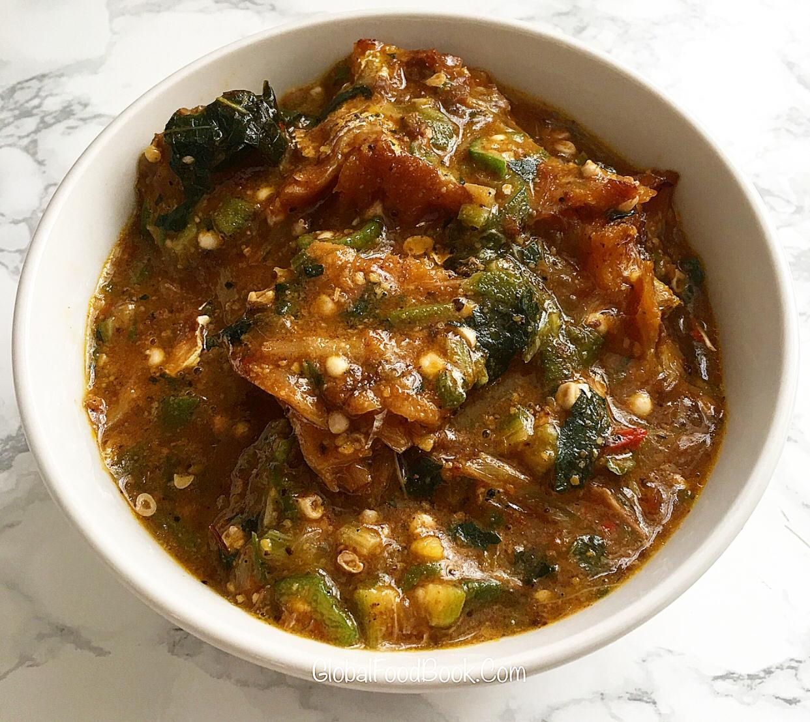

Ofe Ogbono

ofe Ogbono served with swallow,
Ingredients”
- Ogbono/li>
- palm oil
- fresh pepper
- Okro
- Shombo
- Onions
- salt
- seasoning cube
- Preferred protein
- crayfish
- ugu leaf
Steps
- Pour a little quantity of water into the pot
- mix the grinded Ogbono and palm oil in a bowl and pour into the boiling water
- Stir continuously so it does burn as it cooks
- Add a finely chopped okro, fresh pepper, Shombo and Onions into the mixture
- pour in the stock water/li>
- Salt and seasoning cube to taste
- put the preferred protein
- close the pot and allow it to cook for 20 minutes
- lastly, ugu leaf and Grounded crayfish